Multitask learning or coaching (glmnet only)
MultitaskLearning.Rmd#> Loading required package: glmnet
#> Loading required package: Matrix
#> Loaded glmnet 4.1-8Multitask learning consists of data \(X\) with two or more responses \(y_1, \dots, y_j\). We usually assume that there is shared signal across the responses, and that performance can be improved by jointly fitting models for the responses.
Pretraining is a natural choice for multitask learning – it is a method to pass information between models. The overview for our approach is to:
- fit a multi-response Gaussian model,
- extract the support (shared across responses) and offsets (one for each response), and
- fit a model for each response, using the shared support and appropriate offset.
Importantly, in Step 1, we will use regularization so that the multi-response Gaussian model is forced to choose the same support for all responses \(y_1, \dots, y_j\). This encourages learning across all responses in the first stage; in the second stage, then, we can find features that are specific to each individual response \(y_k\).
We will illustrate this with simulated data with two Gaussian responses; the two responses share the first 5 features, and they each have 5 features of their own. The two responses are quite related, with Pearson correlation around 0.5.
set.seed(1234)
n = 1000; ntrain = 500;
p = 500
sigma = 2
x = matrix(rnorm(n*p), n, p)
beta1 = c(rep(1, 5), rep(0.5, 5), rep(0, p - 10))
beta2 = c(rep(1, 5), rep(0, 5), rep(0.5, 5), rep(0, p - 15))
mu = cbind(x %*% beta1, x %*% beta2)
y = cbind(mu[, 1] + sigma * rnorm(n),
mu[, 2] + sigma * rnorm(n))
cat("SNR for the two tasks:", round(diag(var(mu)/var(y-mu)), 2))
#> SNR for the two tasks: 1.6 1.44
xtest = x[-(1:ntrain), ]
ytest = y[-(1:ntrain), ]
x = x[1:ntrain, ]
y = y[1:ntrain, ]
# Define training folds
nfolds = 5
foldid = sample(rep(1:nfolds, trunc(nrow(x)/nfolds)+1))[1:nrow(x)]
cat("Correlation between two tasks:", cor(y[, 1], y[, 2]))
#> Correlation between two tasks: 0.5218575The first step of pretraining is to fit a multi-response Gaussian model and extract the offset and support.
mtask.fit = cv.glmnet(x, y, family = "mgaussian",
keep = TRUE,
foldid = foldid,
type.measure = "mse")
offset = mtask.fit$fit.preval[, , mtask.fit$lambda == mtask.fit$lambda.1se]
coefs = coef(mtask.fit, s = "lambda.1se")
coefs = cbind(coefs$y1, coefs$y2)
support = which((rowSums(coefs) != 0)[-1])And now, we’ll fit a separate model for each response. We will loop over values of \(\alpha\) (\(0, 0.1, \dots, 1\)); for each \(\alpha\), we fit a model for each response using the offset and support defined above and modified by \(\alpha\). We also record the minimum CV mean squared error for each model – this is how we will perform model selection.
cv.error = c(NULL, NULL)
alphalist = seq(0, 1, length.out = 11)
for(alpha in alphalist){
pf = rep(1/alpha, p)
pf[support] = 1
y1_fit = cv.glmnet(x, y[, 1],
foldid = foldid,
offset = (1 - alpha) * offset[, 1],
penalty.factor = pf,
family = "gaussian",
type.measure = "mse")
y2_fit = cv.glmnet(x, y[, 2],
foldid = foldid,
offset = (1 - alpha) * offset[, 2],
penalty.factor = pf,
family = "gaussian",
type.measure = "mse")
cv.error = rbind(cv.error, c(min(y1_fit$cvm), min(y2_fit$cvm)))
}
par(mfrow = c(2, 1))
plot(alphalist, cv.error[, 1], type = "b",
xlab = expression(alpha), ylab = "CV MSE",
main = bquote("Task 1: CV MSE vs " ~ alpha))
abline(v = alphalist[which.min(cv.error[, 1])])
plot(alphalist, cv.error[, 2], type = "b",
xlab = expression(alpha), ylab = "CV MSE",
main = bquote("Task 2: CV MSE vs " ~ alpha))
abline(v = alphalist[which.min(cv.error[, 2])])
The optimal values of \(\alpha\) for the two responses are pretty close, and we could choose to use one \(\alpha\) for both responses (say, the \(\alpha\) that minimizes the average CV for both class). Here, we will choose to use two separate values of \(\alpha\). We train our final models:
best.alpha.1 = alphalist[which.min(cv.error[, 1])]
best.alpha.2 = alphalist[which.min(cv.error[, 2])]
pf = rep(1/best.alpha.1, p)
pf[support] = 1
y1_fit = cv.glmnet(x, y[, 1], foldid = foldid,
offset = (1 - best.alpha.1) * offset[, 1],
penalty.factor = pf,
family = "gaussian",
type.measure = "mse")
pf = rep(1/best.alpha.2, p)
pf[support] = 1
y2_fit = cv.glmnet(x, y[, 2], foldid = foldid,
offset = (1 - best.alpha.2) * offset[, 2],
penalty.factor = pf,
family = "gaussian",
type.measure = "mse")There are two natural baselines: one is the performance of the multi-response model used in the first step of pretraining, and the other is a separate model for each response:
y1_fit_no_pretrain = cv.glmnet(x, y[, 1], foldid = foldid,
family = "gaussian", type.measure = "mse")
y2_fit_no_pretrain = cv.glmnet(x, y[, 2], foldid = foldid,
family = "gaussian", type.measure = "mse")Compare performance for task 1:
test_offset = predict(mtask.fit, xtest, s = "lambda.1se")[, , 1]
test_mtask_pred = predict(mtask.fit, xtest, s = "lambda.min")[, , 1]
cat("Response 1 MSE overall model:",
round(assess.glmnet(test_mtask_pred[, 1], newy = ytest[, 1])$mse, 2))
#> Response 1 MSE overall model: 4.25
cat("Response 1 MSE with pretraining:",
round(assess.glmnet(y1_fit, xtest, newy = ytest[, 1],
newoffset = (1 - best.alpha.1) * test_offset[, 1])$mse,
2))
#> Response 1 MSE with pretraining: 4.26
cat("Response 1 MSE individual model:",
round(assess.glmnet(y1_fit_no_pretrain, xtest, newy = ytest[, 1])$mse, 2))
#> Response 1 MSE individual model: 4.48And performance for task 2:
cat("Response 2 MSE overall model:",
round(assess.glmnet(test_mtask_pred[, 2], newy = ytest[, 2])$mse, 2))
#> Response 2 MSE overall model: 5.21
cat("Model 2 MSE with pretraining:",
round(assess.glmnet(y2_fit, xtest, newy = ytest[, 2],
newoffset = (1 - best.alpha.2) * test_offset[, 2])$mse,
2))
#> Model 2 MSE with pretraining: 4.98
cat("Model 2 MSE individual model:",
round(assess.glmnet(y2_fit_no_pretrain, xtest, newy = ytest[, 2])$mse, 2))
#> Model 2 MSE individual model: 5.8We find that pretraining improves performance for response 2, and has performance close to that of the overall model for response 1.